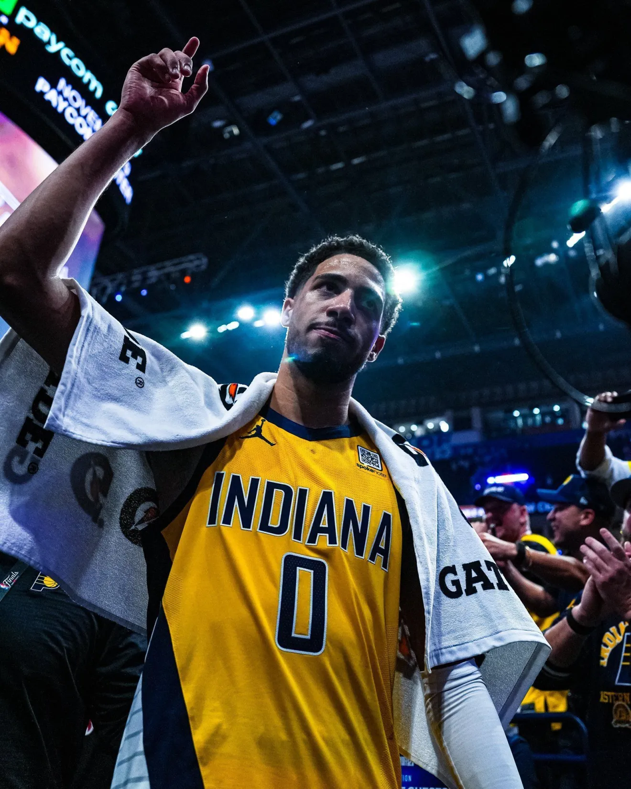

NBA: Gilgeous-Alexander pode bater recorde de Michael Jordan

Armador do Thunder está próximo de igualar façanha alcançada apenas por O'Neal, Jordan e Abdul-Jabbar,
podendo conquistar título de pontuação, MVP e campeonato na mesma temporada
Em 2000, Shaquille O'Neal realizou uma das campanhas mais dominantes na história da NBA. Ele venceu o
título de pontuação, foi MVP da temporada regular e MVP das Finais da NBA — culminando com o campeonato
dos Lakers.
Apenas três jogadores já conseguiram essa tríplice conquista: O'Neal, Michael Jordan (quatro vezes) e
Kareem Abdul-Jabbar. Isso não acontece desde então.
Shai Gilgeous-Alexander está batendo à porta da história, e faz isso com a calma inabalável de um
jogador que já pertence a esse patamar. Com apenas 26 anos, Gilgeous-Alexander tem o Oklahoma City
Thunder à beira de seu primeiro título da NBA desde que a franquia se mudou de Seattle.
O Jogo 3 das Finais acontece às 21h30 desta quarta-feira em Indianapolis.
Seu estilo suave, ainda que irregular, tem deixado as defesas confusas e ofegantes durante toda a
temporada. Nos dois primeiros jogos destas Finais da NBA, Gilgeous-Alexander marcou 72 pontos, o maior
número já registrado por um jogador em seus dois primeiros jogos de Finais na carreira. Ele superou 30
pontos em todos os jogos até agora e está com média superior a 30 pontos por jogo nos playoffs.
"Estou sendo eu mesmo", disse Gilgeous-Alexander após o Jogo 2. "Não acho que tentei reinventar a roda
ou encarar com uma mentalidade diferente. Apenas tento atacar o jogo da maneira certa. Acho que tenho
feito um bom trabalho até agora."
Mas Gilgeous-Alexander não está apenas realizando uma aula de ataque – ele também está liderando a
defesa. Com sete roubadas de bola já na série, ele é um dos apenas quatro jogadores na história das
Finais a conseguir jogos consecutivos com mais de 30 pontos e três ou mais roubadas, juntando-se a Rick
Barry, Dwyane Wade e LeBron James.
"Ele continua progredindo, melhorando e se elevando em todas as ocasiões", disse o técnico do Thunder,
Mark Daigneault. "Sim, não é surpreendente a esta altura. É simplesmente o que ele faz."
E não se trata apenas de uma sequência positiva nas Finais. A temporada inteira de Gilgeous-Alexander
tem sido uma aula magna. Ele é agora o 12º jogador na história da NBA a marcar mais de 3.000 pontos
somando temporada regular e playoffs – juntando-se a nomes como Jordan, Wilt Chamberlain e Kobe Bryant.
"Com Shai, você pode marcar 34 pontos antes mesmo de eles entrarem no avião para o próximo jogo", disse
o técnico dos Pacers, Rick Carlisle, após o Jogo 2. "O cara vai pontuar. Precisamos encontrar maneiras
de dificultar ao máximo para ele."
Os números apontam para uma campanha histórica, mas também destacam algo raro na NBA atual: um armador
como motor indiscutível de um time finalista. Nos últimos 35 anos, apenas Steph Curry claramente ocupou
essa posição enquanto conquistava um campeonato. Alas e pivôs tradicionalmente dominaram este palco.
E não podemos esquecer: Gilgeous-Alexander tem apenas 26 anos. O Thunder é o time mais jovem da NBA, com
um núcleo que inclui Jalen Williams, de 24 anos, e Chet Holmgren, de 23. Eles chegaram antes do previsto
— e Gilgeous-Alexander é o coração pulsante que impulsiona tudo isso.
Se ele completar a jornada e entregar um campeonato a Oklahoma City, não será apenas a conquista máxima
de um ano de ascensão. Será uma das maiores temporadas individuais na história da NBA.
"Se conectar com esse fã da NBA, estar muito próximo a esse público, oferecer experiências, itens
colecionáveis de desejo, oferecer um conteúdo que vai além dos jogos que eles podem assistir, que mostre
os bastidores atrás das câmeras da NBA, foi uma forma muito poderosa de conectar a marca com essa
audiência. E o fã do esporte, quando ele é fã mesmo, ele move montanhas para conseguir se relacionar com
esporte", detalhou.
Na edição de 2025 da NBA House, em São Paulo, localizada em um espaço no Parque Villa-Lobos, a marca
oferece diversas ativações: uma delas, acertar uma cesta de basquete vendado. Em duplas, amigos narram e
orientam o caminho para o acerto valendo itens colecionáveis da NBA.
Outra atração acontece durante os intervalos dos jogos no local. Na quadra de LED da NBA House, o
público é dividido nas equipes "Maionese" e "Ketchup" e precisam encher o recipiente do molho do seu
time fazendo cestas. Quem vencer, também garante prêmios para levar pra casa.